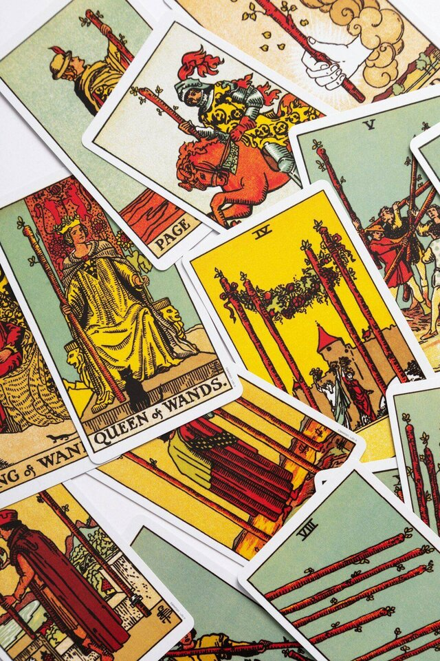

Trusted by thousands of callers nationwide
Relationship Tarot Reading by Phone - Real Perspective on the Two of You, 24/7
When you're too close to see it clearly, a relationship tarot reading shows you the dynamic for what it actually is. Every reader on our line is hand-vetted by our master psychics - connect in under 60 seconds. Your first minute is $1 and you can hang up anytime.
- Hand-vetted readers
- Available 24/7
- Hang up anytime
Call and speak with a live reader for a relationship tarot reading that names the dynamic you've been feeling but couldn't put into words. No appointment, no waiting - first-time callers get an introductory rate of $1 per minute, or 15 minutes for $10, and you can hang up the moment you have your answer.

What Is a Relationship Tarot Reading?
A relationship tarot reading uses the cards to look honestly at the dynamic between you and your partner - what's working, where the friction lives, what each person actually needs, and where the partnership is heading if nothing shifts. Your reader shuffles and lays out cards from the 78-card deck, then interprets them against the question you bring. It isn't about predicting a wedding or a breakup. It's a way to see the relationship from the outside for a few minutes - including the patterns you're too close to notice - so you can respond instead of just react.
How Does a Relationship Tarot Reading Work by Phone?
Your reader pulls and interprets the cards on their end while tuning into your energy through your voice and your intention. The tarot answers to focus, not to physical distance - so a phone relationship tarot reading is just as clear as one across a table. You describe the situation, your reader asks a clarifying question or two, lays the spread, and walks you through what each position says about you, your partner, and the space between you.
What Questions Should I Ask in a Relationship Tarot Reading?
The question you bring shapes how useful the answer is. Open-ended "what" and "how" questions work better than yes-or-no ones, because they give you and your partner something to do rather than a label to carry. Good framings:
"What does this relationship need from me right now?"
Turns worry into a concrete next step.
"How can we move past this same argument?"
Points at the root, not the symptom.
"What is my partner feeling but not saying?"
Reads the energy behind the silence.
"What pattern keeps repeating between us?"
Names the loop so you can break it.
"What's the real strength of this partnership?"
Shows you what's worth protecting.
"What do we each need to feel secure?"
Direction toward closeness, not distance.
Who Is the Best Relationship Tarot Reader to Call?
The best reader for a partnership question is one who is genuinely intuitive, even-handed, and honest enough to describe both sides - not just the version you walked in with. Every reader on our line is hand-vetted by our master psychics, so you're not gambling on a stranger from a directory. Tell us you want relationship guidance and we'll match you with the reader whose strength is exactly that, usually in under 60 seconds. If the connection isn't right, hang up anytime, and our 100% satisfaction promise stands behind the call.
What Do I Do If the Reading Shows a Hard Pattern?
Take a breath - a difficult pattern named out loud is the first thing that makes it changeable. Tarot describes the energy moving through the relationship now, and that energy shifts the moment one person responds differently. A reading that surfaces resentment, distance, or a repeating clash isn't a sentence; it's a map of exactly where the work is. A skilled reader won't hand you a hard truth and hang up - they'll show you what's underneath it and what would actually move it. If it becomes clear the deeper question is about the bond itself, your reader may suggest a psychic love reading for a fuller look.
Common Relationship Situations a Tarot Reading Can Help With
Callers reach for a relationship tarot reading at the moments that keep them up at night:
"Why do we keep having the same fight?"
Find the pattern underneath the argument.
"Are we growing together or apart?"
An honest read on the direction.
"Is the trust really repairable?"
What the energy says about rebuilding.
"Are we ready for the next step?"
Clarity before a big commitment.
"Is this a rough patch or the end?"
Perspective when you can't tell.
"How do I reconnect with my partner?"
A path back toward closeness.
Relationship Tarot Cards and What They Often Mean
No single card decides a partnership - meaning depends on position, the cards around it, and your question. A few, though, surface often in relationship readings. The Two of Cups is mutual care and balanced partnership. The Four of Wands is stability, milestones, and a settled home. The Five of Cups is grief over what was lost while something still remains. The Justice card asks for fairness, accountability, and honest reckoning. The Devil points to attachment, control, or a pattern that feels stuck. The Six of Cups brings nostalgia and the choice of what to carry forward. Your reader weaves these into one story - the deck never answers in a single word. For background on how the deck is structured, see the tarot.
Can a Relationship Tarot Reading Tell Me If We'll Stay Together?
It can show you the honest state of the partnership - what each person is bringing, where it's strong, where it's strained, and the direction it trends if nothing changes. What it won't do is hand you a guaranteed forever or a guaranteed ending, because the future moves with the choices you both make from here. A reader worth your time gives you the real picture, including the uncomfortable part, plus what would shift it. That's far more useful than a tidy yes or no that leaves the actual relationship untouched.
Relationship Tarot Reading vs. Love Tarot vs. Psychic Love Reading
They overlap, but each leads with a different lens. A relationship tarot reading focuses on the dynamic between two people in an existing partnership. A love tarot reading often centers on a connection or person and where it's going. A psychic love reading leads with the reader's direct intuition rather than the cards. Many callers start with relationship tarot for a clear read on the dynamic, then go deeper if the real question turns out to be bigger.
How to Prepare for Your Relationship Tarot Reading
Find a quiet space, take a few slow breaths, and settle on the one thing about the relationship you most want clarity on before you dial - a focused question gives a focused answer. Have your partner's first name in mind. Come willing to hear both sides; the most useful readings describe your part too, not only theirs. And the practical part: first-time callers pay $1 per minute, you can do 15 minutes for $10, and you can hang up the moment you have what you need.
See the Two of You Clearly
The cards will name the dynamic you've been feeling but couldn't explain. We'll connect you with the right hand-vetted reader in under 60 seconds. $1/min first call · 15 minutes for $10 · hang up anytime · 100% satisfaction promise.
Call (888) 920-6662 NowWhat Callers Say About Their Relationship Tarot Reading
"We'd been stuck in the same argument for a year. She described the pattern so precisely I read it back to my partner that night. It changed the whole conversation."
"I expected him to take my side. Instead he showed me my own part in it - fairly and kindly. That honesty is exactly why I called back."
Explore every reading type on our phone psychic readings hub, or focus on a connection with a love tarot reading.
Relationship Tarot Reading - Frequently Asked Questions
What is a relationship tarot reading?
It uses the cards to look at the dynamic between you and your partner - the strengths, the friction, what each person needs, and where it's heading.
What questions should I ask in a relationship tarot reading?
Open-ended "what" and "how" questions, like "What does this relationship need right now?" - they give you something you can act on together.
Can it tell me if we'll stay together?
It shows the current dynamic and the likely direction if nothing changes - but the future moves with the choices you both make. Expect honesty, not a verdict.
Does a relationship tarot reading work over the phone?
Yes. Your reader pulls the cards on their end and connects through your voice and intention; distance doesn't affect accuracy.
How much does it cost?
First-time callers pay $1/min, or 15 minutes for $10. Returning callers pay the per-minute rate, and you can hang up anytime.
Is a relationship tarot reading accurate?
It reflects the energy and patterns in the relationship now. It's most accurate as honest perspective, and the clearer your question, the clearer the answer.
Can my partner be part of the reading?
The reading works from your energy and question; you don't need your partner on the line. Many callers share what came up afterward.
How often should I get a relationship tarot reading?
When something genuinely shifts - a turning point, a recurring issue, a big decision. Re-reading the same question repeatedly clouds it more than it clears it.
Get Your Relationship Tarot Reading Now
Here's what happens when you call: you're connected to a hand-vetted reader in under 60 seconds, they pull the cards on your partnership, and you hang up seeing it clearly.
- Hand-vetted reader
- Connected in under 60 seconds
- $1/min first call · 15 min for $10
- Hang up anytime
- 100% satisfaction promise